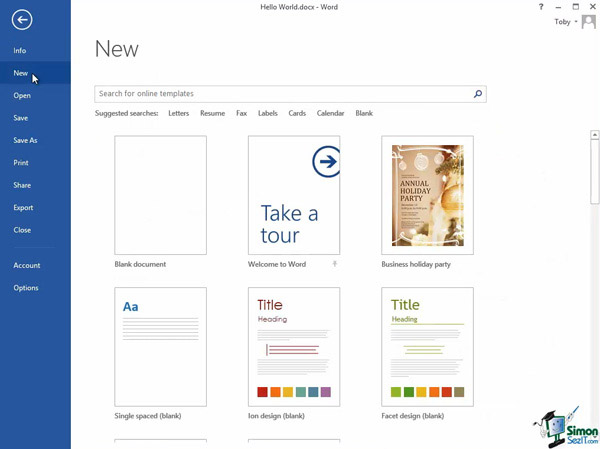

Do you know how to use the Backstage View in MS Word. To get started, click the File menu to show the Backstage View’s tab listed on the left side of the window.
Info, New, Open, Save, Save As, Print, Share, Export, Close, Account, and Options are some of the items you’ll encounter. Read the description of the important ones given below and look through the helpful screenshots.
You’ll need to create or open a document saved in MS Word to work with it in the Backstage View. To see the information about the file you are currently working on, hit the first tab of the File menu named Info.
The option of giving you the possibility to protect your document from editing is found here as well as the list of the document’s properties below the Properties button. If you need to know the document’s size, quantity of words, date of last modification, or author’s name, you can find them in this list. To get more information, such as the company name or document’s status, click Show All Properties in the drop-down.
After clicking the Properties button, you’ll get access to Advanced properties. Hit that to get a pop-up window with tab marks. With this you can:
• See general information about the document in General
• Add to the document’s title or company info in Summary
• Get detailed information (e.g. quantity of pages or characters) in Statistics
• Look through the contents in Contents
• Add custom information in Custom
Another option you’ll see after dropping-down the Properties button is the Show Document Panel. Click that and you’ll get the usual document panel with document’s properties above it. You can edit those properties. You can add keywords, for example, which will be used for searching the document in the Keywords field.
Next, you can explore other tabs and use them according to your needs. If you need to create a new document, go to the New option where you can select a template for it.

Opening the existing document can be done by hitting the Open button. Recently used documents will show up in Recent documents. You can select any of them or you can browse a document from your hard drive by using the Computer option.

To save changes you’ve made in an existing document, press the Save button. To save the newly created document somewhere on your computer, use Save As. By using the Print tab, you can print your document on a printer. If you want to share your document with other people, go to the Share tab. You can attach a document to an email message and send it to anybody. Sharing online can also be done through the SkyDrive.
When you need to create a PDF or XPS file from a MS Word document, you can change the file type by using the Export tab.
Finally, you can close the document by clicking the Close tab. If you want to leave the Backstage View and go back to editing the document, click the button with a left pointing arrow located above the tabs.